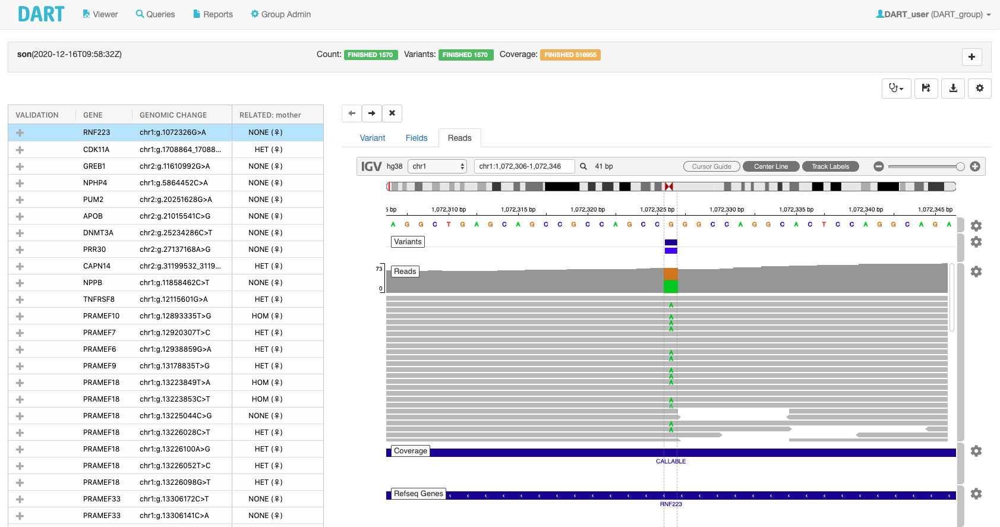

Diagnostic Analysis and Reporting Tool

Finding the one in a million
Rare und undiagnosed diseases are often caused by genetic defects. Rapid identification of the causal mutation(s) provides a molecular diagnosis that can inform potentially invasive treatment decisions and reduces the need for lengthy (and often costly) testing. Genetic diagnoses are currently hampered by the large number of potential disease genes, by the high number of variants identified and by the complexity of variant annotation, which can lead to major delays in reaching a confident genetic diagnosis.
Reporting variants
DART is a user-friendly, non-commercial software tool that assists researchers and clinicians with the filtering and interpretation of genetic variants obtained by next generation sequencing (e.g. diagnostic panels, exome sequencing, or whole genome sequencing. DART facilitates confident genetic diagnoses in compliance with emerging community standards. Starting with an annotated VCF file, DART supports interactive filtering, implements ACMG- AMP classification, provides full audit history, and helps generate custom patient reports.
Going the extra mile
Starting with an annotated VCF file, DART supports the user by providing
- Sample focused analysis
- Virtual gene panels
- Standardized filtering
- Interactive exploration and visualization of variants
- Disease focused variant analysis
- Trio / relatedness variant representation
- Support ACMG-AMP variant curation
Full control
DART rivals commercial variant annotation software in terms of features and user-friendliness, and – as an open source software with no strings attached – it puts the full control over genetic data back in the hands of the clinical laboratories that analyse the data. It thus avoids undue commercialization of genome data and facilitate responsible sharing.
Getting started
Give DART a quick try!
For a quick test drive of DART you can access a demo account with limited features on our public instance (username/password: demo). You can try out the following:
- Run a query in real-time using a predefined panel/query on the samples of our demo dataset published on zenodo
- Explore the variants resulting from the query
- Look at a sample report and download it in csv and json format
- Load a report JSON in the viewer (available also without login)
Install and use a local stand-alone instance
Requirements and pre-requisites
This workflow was tried on MacOS Mojave and on a Linux Debian distribution.
You must have DOCKER installed and running on your machine: for LINUX please be sure that both the docker and docker-compose packages are installed. We suggest to dedicate at least 2 CPUs and 4GB of RAM to the Docker daemon. The complete installation files, data input files and database files need around 30GB of space on disk.
Installation
Download and extract the lastet release binary DART-server-1.0.0-install.tar.gz:
wget --no-http-keep-alive https://github.com/DanieleBarreca/BSF_DART/releases/download/1.0.0/DART-server-1.0.0-install.tar.gz
tar -xzvf DART-server-1.0.0-install.tar.gz
Start the application server
To start the application server you can use the start script:
bash DART-server-1.0.0/start.sh
Please note that the server log is under DATA/log/server.log. The server can take some time before being up and running.
DO NOT remove the installation folder DART-server-1.0.0 since all the data resides here!
In the DATA folder of the installation folder you will find:
- A log folder where the application server logs are written
- A mongo folder where the mongodb files are written
- A mysql folder where the mysql files are written
- A projects folder where your project data reside
Download and load the demo data
To load data on your local installation of DART you should create a project in your installation folder under DATA/projects and then run the loader (make sure the application server is up and running).
To download and extract our demo trio project (https://doi.org/10.5281/zenodo.4314874), you can use the following:
cd DART-server-1.0.0
wget --no-http-keep-alive https://zenodo.org/record/4320863/files/DART_Demo_Trio.tar.gz
tar -xzf DART_Demo_Trio.tar.gz
Once the project is extracted in the DATA/projects folder you can load it in DART using the command from terminal
docker exec -it dart-server './bin/dart_loader/loader.sh' 'DART_Demo_Trio'
Access the tool
Open your browser (tested with Google Chrome and Firefox) on localhost:8080 and login using the credentials:
- User: DART_user
- Password: changeme
You can refer to the guides in this documentation for usage details.
Stopping the application server
To stop the application server you can use the stop script:
bash DART-server-1.0.0/stop.sh
Uninstallation
- Remove all the docker images (container are removed by the stop script)
docker image rm org.open.medgen/dart-server:1.0.0_local - Remove all the data stored locally
rm -r DART-server-1.0.0
Source code avaialbility
For more details regarding software architecture and configuration, as well as the complete source code of DART, please refer to our GITHUB repository.